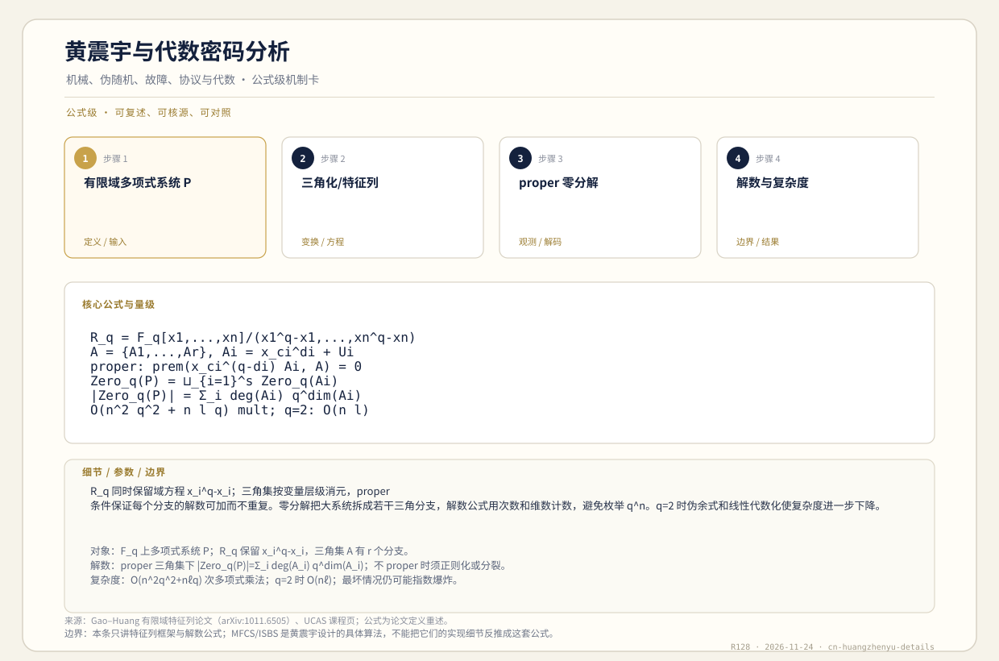

原理与机制
中国密码史：黄震宇与代数密码分析（Huang Zhenyu and Algebraic Cryptanalysis）。黄震宇与高小山的工作把吴特征列方法推进到有限域 (F_q) 上的多项式方程组。设 (R_q=F_q[x_1,\ldots,x_n]/(x_1^q-x_1,\ldots,x_n^q-x_n))，三角集 (A={A_1,\ldots,A_r}) 满足 (A_i=x_{c_i}^{d_i}+U_i)，且 (\deg(U_i,x_{c_i})<d_i)。若 (A) 是 proper 三角集，则解集可写成不相交的零分解 (Zero_q(P)=\bigsqcup_i Zero_q(A_i))，解数为 (\sum_i \deg(A_i),q^{\dim(A_i)})。这把“解方程组”化成“三角化 + 计数”，而不是盲目枚举 (q^n)。

为什么重要
代数密码分析把密码方程写成有限域上的多项式系统，再用消元求密钥。特征列方法的优势是：它保留域方程 (x_i^q-x_i)，在 Boolean 情形 (q=2) 时把伪余式化成线性代数，复杂度可写成 (O(n^2q^2+n\ell q)) 次多项式乘法；(q=2) 时进一步降到 (O(n\ell))。这比一般 Gröbner 基更贴近密码方程的结构，尤其是流密码的 Boolean 系统。
应用与实例
使用时先把密码方程写成 (P={p_1,\ldots,p_m}\subset R_q)，对 (P) 做特征列分解，得到若干三角集 (A_i)；再对每个 (A_i) 递归求解、回代，或用解数公式估计候选规模。若目标是求一个密钥比特，可以在三角化后只保留包含该变量的分支，减少回代。论文中的实验覆盖 40–128 个变量的 Boolean 系统，说明该方法不是只停留在理论复杂度。
边界与攻击面
边界有三条。第一，最坏情况下特征列分解仍可能指数爆炸；变量顺序、方程排序和中间膨胀会显著改变实际时间。第二，解数公式只对 proper 三角集成立；若三角集不 proper，必须先做正则化或分裂，否则计数会重复。第三，代数攻击要求方程数足够、次数足够低；对随机或高次数系统，消元可能比穷举更慢。因此“有特征列算法”不等于“所有密码都能破”。
历史与背景
黄震宇 1985 年出生，2005 年获中国科学技术大学学士，2010 年获中国科学院数学与系统科学研究院博士；UCAS 课程页列出的研究方向包括代数密码分析，并提到他设计 MFCS、ISBS 等算法。他与高小山的这篇论文把特征列算法、有限域解数和密码分析放在同一条链上；该条目只把特征列框架写成公式，不把 MFCS/ISBS 的具体实现混入，以免把“人物卡”写成“算法全传”。
时间线、证据与争议
登记年份以来源账本为准；背景是破译方法中此前技术、机构与冲突的累积；过程只写有来源支持的参与者、地点与行动；结果写它改变了哪些标准、机器、课程或政策；争议写二手叙述与一手材料的差距。来源包括：Wikipedia search entry for 黄震宇与代数密码分析；《密码简史：穿越远古 展望未来》（杨义先、钮心忻，电子工业出版社，2020，ISBN 9787121398711）。
不要把“发生过”写成“已证明”，也不要把事件标题扩写成机制结论；没有日期的节点只作逻辑位置。
逐步示例与核验
事件时间线模型
背景 → 过程 → 结果 → 争议。背景写此前技术/制度；过程写可核参与者与时间；结果写后续标准、机器、课程或政策；争议写二手叙述与一手材料的差距。
参考出处
- Wikipedia search entry for 黄震宇与代数密码分析. https://zh.wikipedia.org/w/index.php?search=%E9%BB%84%E9%9C%87%E5%AE%87%E4%B8%8E%E4%BB%A3%E6%95%B0%E5%AF%86%E7%A0%81%E5%88%86%E6%9E%90
- 《密码简史：穿越远古 展望未来》（杨义先、钮心忻，电子工业出版社，2020，ISBN 9787121398711）. https://book.cppinfo.cn/Encyclopedias/home/index?id=3730464